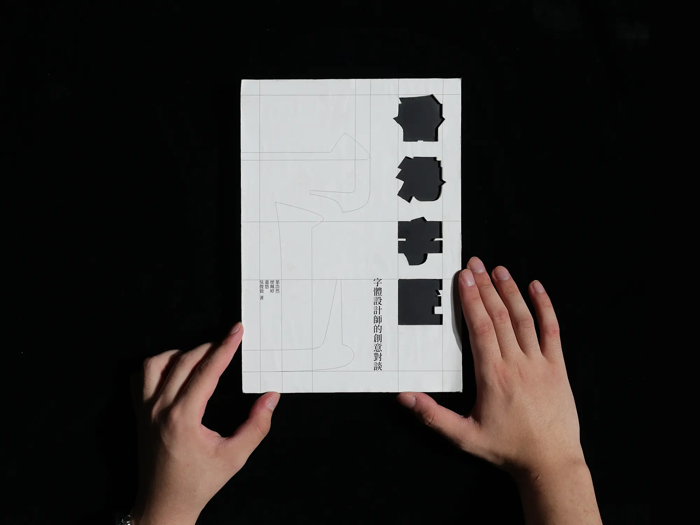
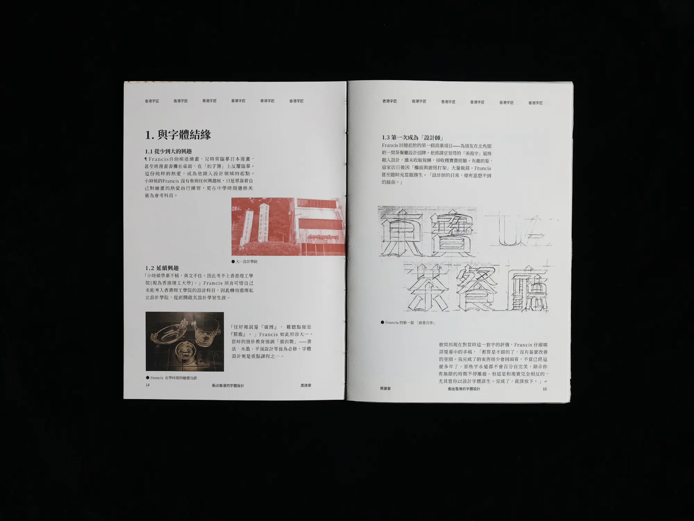
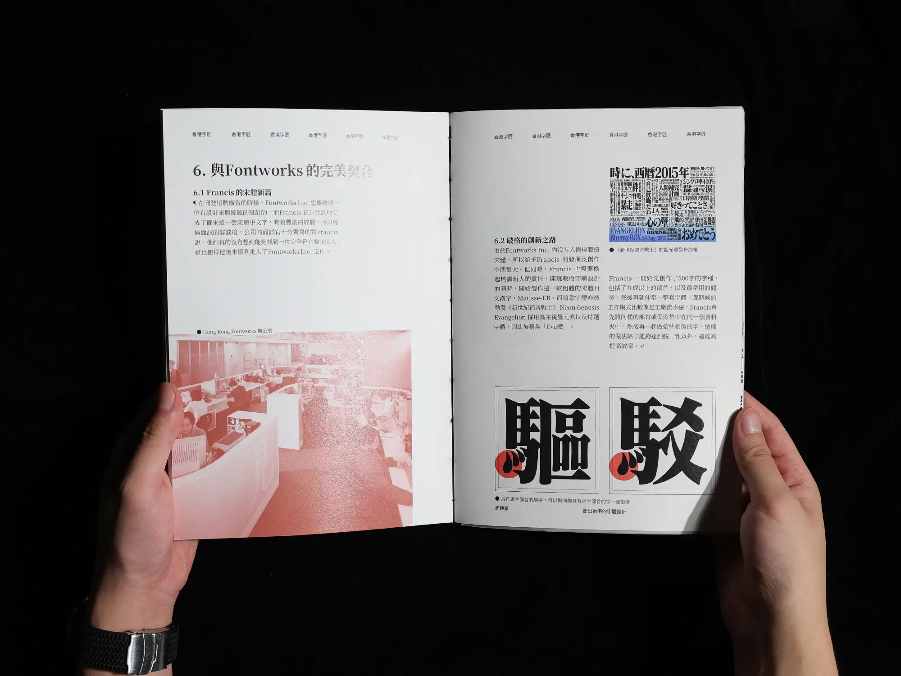
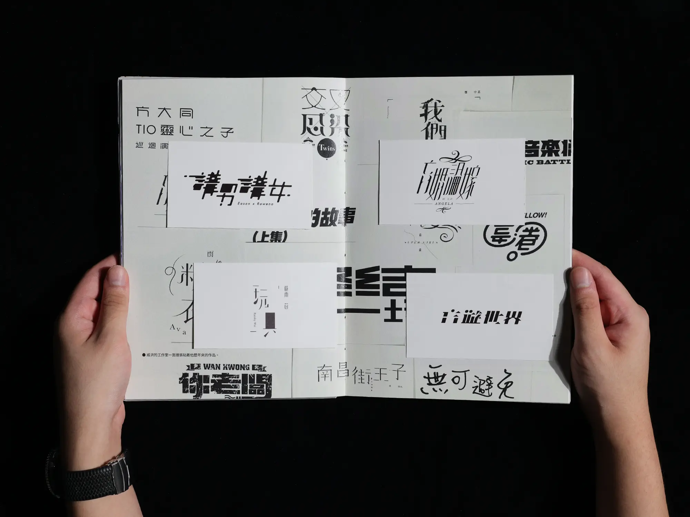
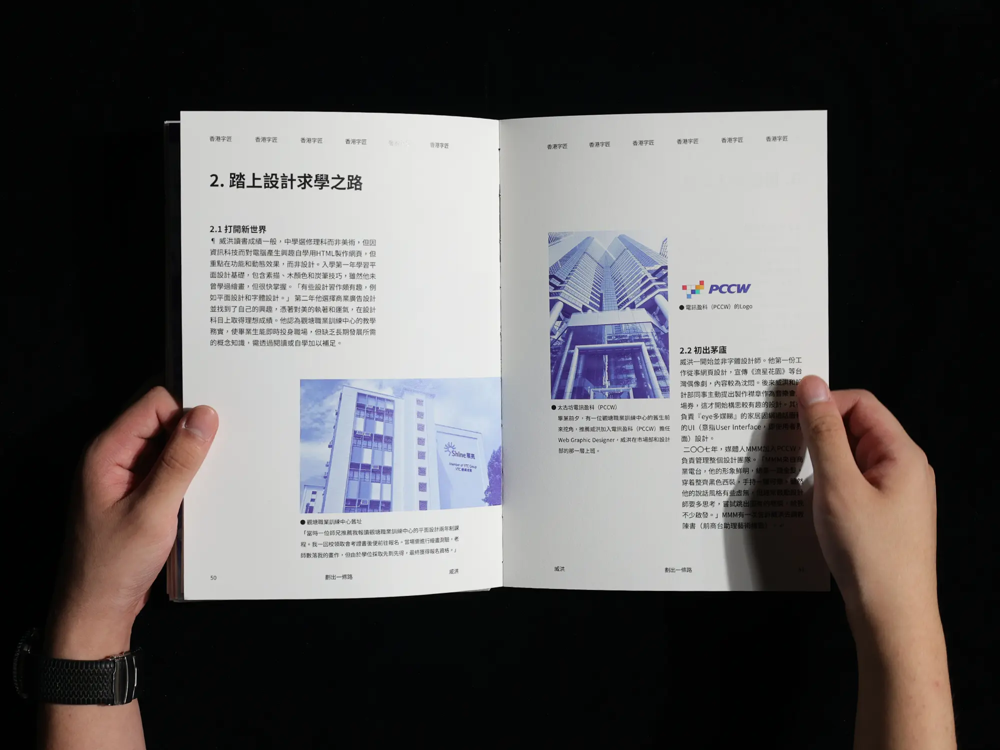
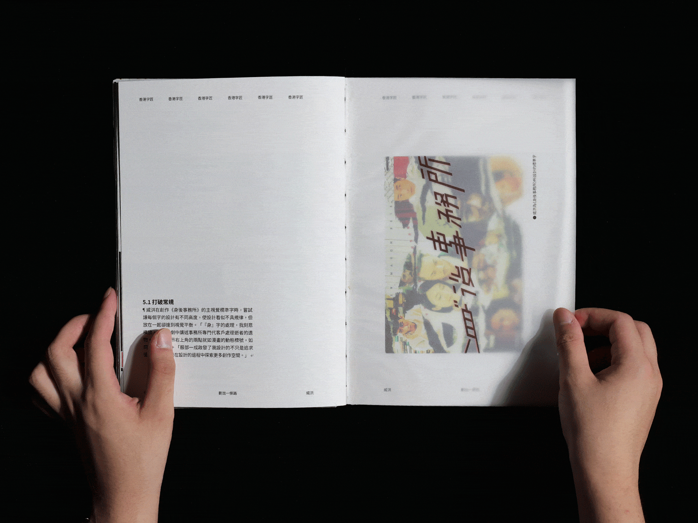

This group project explores the heart of Hong Kong’s typographic identity through the work of two influential designers. The goal was to build a visual bridge between heritage craftsmanship and the digital age, examining how these creators navigate a bilingual landscape to balance cultural preservation with modern Chinese character design.
The resulting publication uses high-contrast layouts and a modular grid to spotlight the structural beauty of their typefaces. By pairing technical anatomy studies with tactile paper choices, the design echoes the gritty, rhythmic textures of the city itself.






© 2026 Fredrick Yip. All rights reserved.